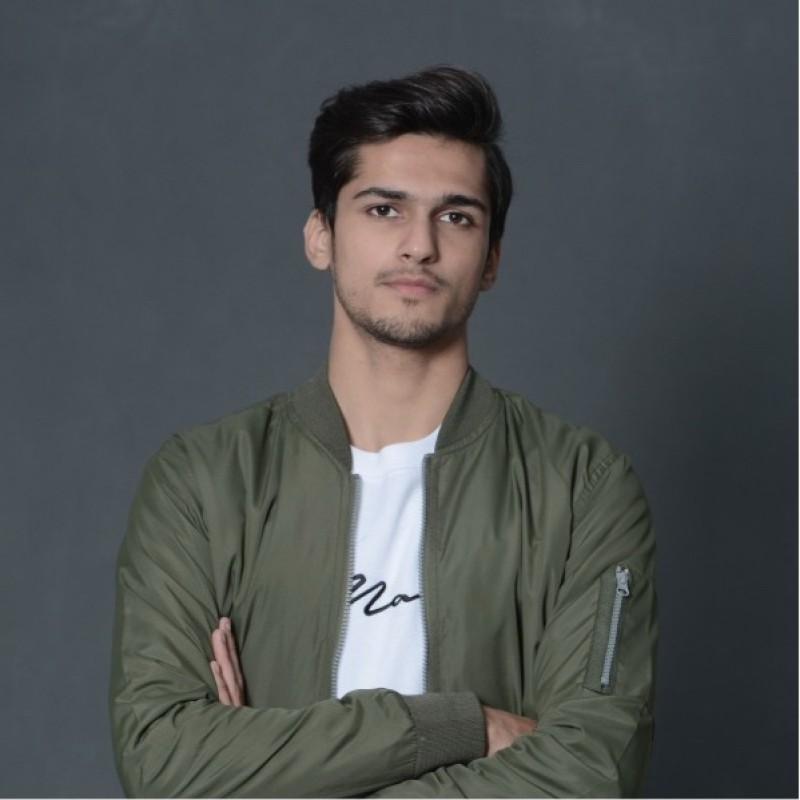

ICIP 2026
Accepted
SceneVGGT: VGGT-based Online 3D Semantic SLAM for Indoor Scene Understanding and Navigation
IEEE International Conference on Image Processing (ICIP), 2026
Open to research internships · 6 months from February 2027
3D Vision/Visual SLAM/Perception Systems
I’m a graduate researcher working on 3D vision and visual SLAM. Before my master’s, I took perception systems from research prototype to unattended deployment in remote forests. I’m now an Erasmus Mundus scholar in Image Processing and Computer Vision, based in Bordeaux for my last semester of coursework.

Feed-forward geometry, submap alignment, and semantic 3D maps that stay consistent over long sequences.
Removing scanner effects from multi-site brain MRI without changing the anatomy, and measuring that honestly.
Detection systems that keep running unattended on remote camera feeds, far from the lab.
Submitted my first-author paper on how MRI harmonization is evaluated to ISBI 2027. Preprint
Moved to Bordeaux for the final semester of the Erasmus Mundus master’s, after Budapest and Madrid.
SceneVGGT, our online 3D semantic SLAM system, was accepted at ICIP 2026. Project page
Our forest-fire detection system was recognized at the Asia-Pacific Triple E Awards.
IEEE International Conference on Image Processing (ICIP), 2026
Submitted to the IEEE International Symposium on Biomedical Imaging (ISBI), 2027
Latent Anatomy-preserving Transport for Cross-site Harmonization
Brain MRI from different hospitals looks different for reasons that have nothing to do with the brain, such as the scanner and the acquisition protocol, and models trained on that data learn those differences instead of biology. The hard part of harmonization is removing the scanner without changing the anatomy.
LATCH works on whole 3D volumes in the latent space of a pretrained 3D autoencoder, moving each scan toward a reference site while keeping its anatomy in place. It follows on from my HarmonIt audit: the goal is a method that holds up under the stricter evaluation that audit argues for.
Anatomy stays put. The harmonization step is trained with an anatomy-consistency constraint, so it changes how the scan looks, not the brain in it.
Online 3D semantic SLAM for indoor scene understanding and assistive navigation.
A sliding-window SLAM pipeline built on VGGT’s feed-forward geometry. Local submaps are aligned by camera pose, so the map stays consistent over long sequences while GPU memory stays under 17 GB. 2D instance masks are lifted to persistent 3D objects for change detection and placed on an estimated floor plane for navigation.
I implemented pipeline components, ran the ScanNet++ benchmarks, and worked on the analysis and revision.
An audit of how multi-site brain-MRI harmonization is evaluated.
I compared seven harmonization methods (GAN, diffusion and statistical) on 1,112 brain MRI scans from 17 sites. The usual score, a frozen site classifier, turned out to be unreliable: classifiers trained with the benchmark’s own recipe disagreed by up to 0.46 balanced accuracy on the same outputs, retrained classifiers still found the site, and the best score went to the most destructive method.
With Dr. Pierrick Coupé (CNRS, LaBRI) and Dr. José M. Martínez (UAM).
Re-identifying urban objects with aspect-preserving ViT-L embeddings.
A ViT-L re-identification system for the ICIP 2026 challenge track. I tried semantic supervision, class-aware retrieval, DINOv2/CLIP reranking and feature fusion, but the biggest gains came from simpler choices: keeping each image’s aspect ratio and training robust embeddings, which improved leaderboard mAP by about 5% relative.
Wildlife monitoring and early forest-fire detection in remote forests.
Two WWF-supported systems from my time at the LUMS Computer Vision & Graphics Lab: species detection from camera traps, and early fire detection from remote camera feeds. I fine-tuned MegaDetector, YOLO-family models and CLIP on field data to cut false alarms from environmental motion, and built the inference, visualization and monitoring around them so they could run unattended.
IPCV · Budapest, Madrid and Bordeaux
A semester each at Pázmány Péter Catholic University, Universidad Autónoma de Madrid and Université de Bordeaux. My harmonization research is supervised by Dr. Pierrick Coupé (LaBRI) and Dr. José M. Martínez (UAM).
Afiniti · Lahore
Bayesian and probabilistic models for real-time decision systems, and the production pipelines that kept them accurate for large telecom clients.
Computer Vision & Graphics Lab, LUMS · Lahore
Built and deployed the wildlife-monitoring and forest-fire systems with WWF, including field validation in Gilgit-Baltistan, Khyber and Mansehra.
University of Management and Technology · Lahore
Graduated as Silver Medalist, and was a teaching assistant for Deep Learning.
Day to day Python, PyTorch, OpenCV, Open3D, MONAI and C++, on Linux and Slurm GPU clusters.
A 6-month placement in 3D vision, visual SLAM, perception, or medical imaging. If your team works on any of these, I’d be glad to talk.